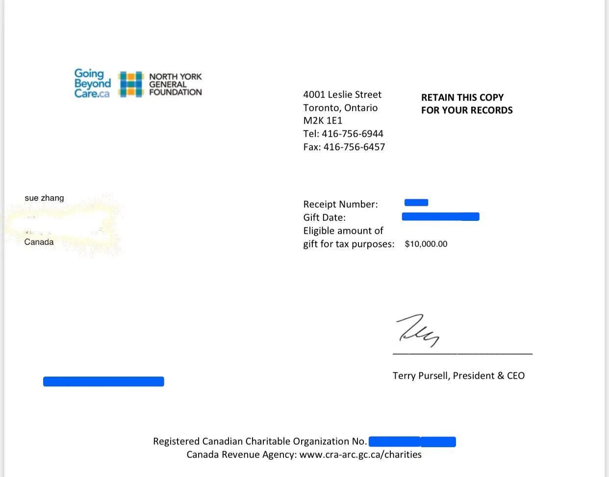

为什么高收入的人群热衷慈善捐款
近期在朋友圈看到某位杰出的房产经纪，向North York General Foundation又捐款了一万刀。在税务角度分析，为什么高收入的人群会热衷做大额的慈善捐款。
税务博客

近期在朋友圈看到某位杰出的房产经纪，向North York General Foundation又捐款了一万刀。在税务角度分析，为什么高收入的人群会热衷做大额的慈善捐款。

由于大环境的因素，今年的房屋贷款利率比往年有了很大幅度的降低。有出租房的朋友就会有这个问题：为了更低利率变更房屋贷款，银行收取的罚金能否作为租房费用呢？

非税务居民在出售加拿大的房产或楼花时，律师会hold卖价的25%。本文全面解析“清税证明”Certificate of Compliance 的申报过程。
上文《安省个人地产有限公司的⑩问答》我们就安省个人地产有限公司（PREC）的设立做了基本介绍。这篇文章主要就关于TOSI做一些探讨。
Bill-145法案《地产服务信任法》的通过将允许在安省执业的地产经纪通过设立Personal Real Estate Corporation（PREC）的形式从Brokerage收取佣金。